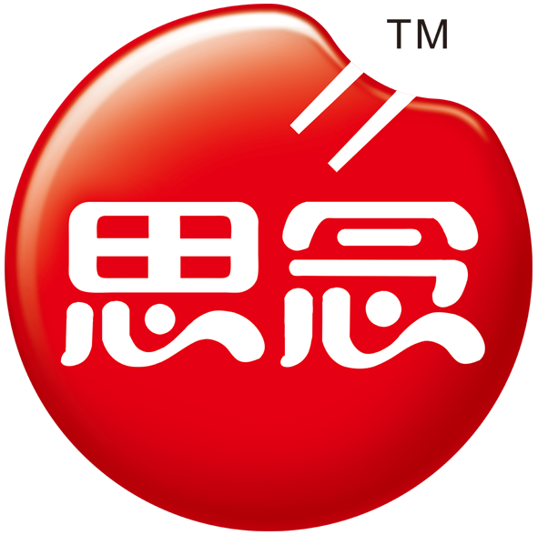

<ion-view>
    <ion-header-bar align-title="left" class="bar-assertive">
        <div class="buttons">
            <button class="button icon ion-arrow-left-c" ng-click="goBackView()">返回</button>
        </div>
        <h1 class="title" style="text-align: center">关于我们</h1>

        <div class="buttons">
            <button ng-show="false" class="button" ng-click="">占位钮</button>
        </div>
    </ion-header-bar>
    <ion-content delegate-handle="mainScroll" style="width: 80%;margin: 0 auto;text-align: center" overflow-scroll='false'>
        
        <div style="margin-top: 10px"><span>我梦想有一天，这个国家会站立起来，真正实现其信条的真谛："我们认为真理是不言而喻，人人生而平等!"</span></div>
    </ion-content>
</ion-view>
